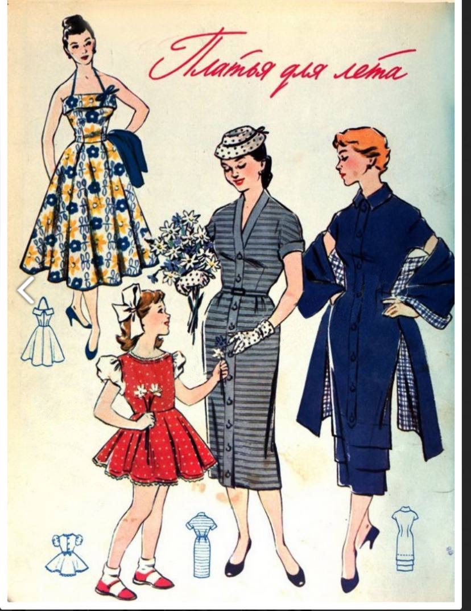
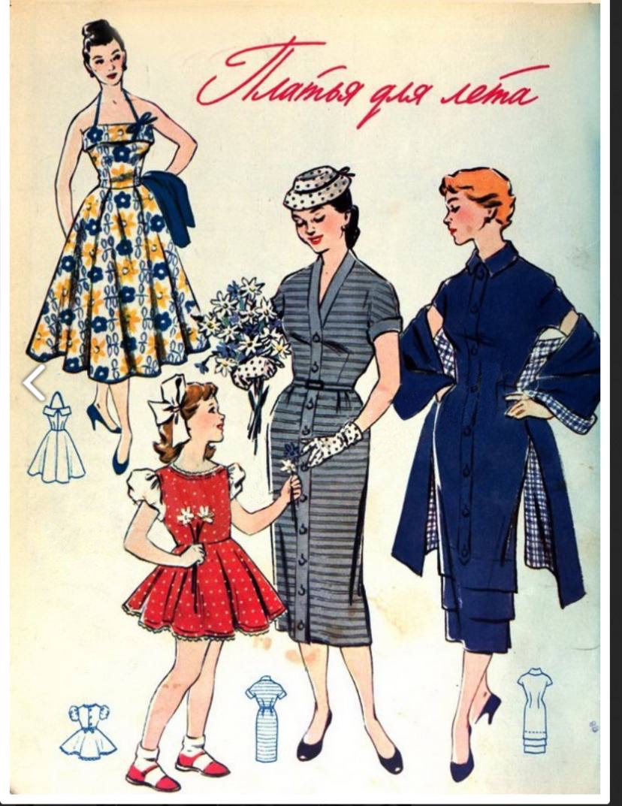

С 1954 год СССР становится членом ЮНЕСКО - Организации Объединённых Наций по вопросам образования, науки и культуры, что способствовало расширению сотрудничества советского государства с другими странами.
Артисты и спортсмены, дипломаты, торговые представители, моряки торгового флота, летчики гражданской авиации, словом все, у кого была возможность побывать в зарубежных поездках, являлись одним из каналов проникновения в страну западных модных тенденций. Они привозили иностранные вещи на продажу, у них можно было увидеть заграничные журналы и просто услышать рассказы о быте и моде «там», где так хотелось хоть раз в жизни побывать каждому советскому человеку.
Если в начале 1950-х годов зарубежные источники информации старались перекрывать, то с середины 1950-х произошли некоторые перемены. В журналах мод, которых начали публиковаться иностранные модели одежды, большинство, конечно же, было из стран социалистического лагеря, но просачивались и работы западных модельеров. Советские люди смогли прочитать о стиле, предложенном Кристианом Диором. Журналы мод довольно быстро подхватили новые тенденции и стали размещать на своих страницах образцы актуальных женственных нарядов.
Интересным источником знаний о моде того времени могут быть фильмы — о новых коллекциях снимали видеоролики, где подробно презентовали каждый образ и объясняли, как и где его следует носить. Такие фильмы предназначались не только для внутреннего показа, но и для демонстрации на международных выставках.
Зима
1950-е годы - время моды на шубы из натурального меха. Шубка была мечтой каждой женщины, но
осуществить её могли далеко не все. Самыми распространенными являлись шубы из каракуля, белки,
кролика, цигейки, а также пальто с воротником из чернобурки, или с воротником и манжетами,
отделанными каракулем, либо более дешевыми цигейкой и кроликом. Очень модными были шубки из
настоящего котика, но подобная роскошь встречалась на улицах советских городов нечасто. Подавляющее
большинство женщин ходило в пальто, приталенных или трапециевидных.
Многие горожанки в 1950-е носили различные шляпы. В СССР все еще оставались популярными тюрбаны,
появившиеся в военное десятилетие. В моду вошли маленькие шляпки, прикрывающие затылок, прозванные в
нашей стране «менингитками».
В конце 1950-х на улицах крупных городов можно было увидеть дам в замысловатых шляпах, в шляпках с
вуалями. В тоже время очень большое количество женщин ходило в платках. Чрезвычайно модной деталью в
эти годы являлись декоративные шляпные булавки и брошки.
В зимнем сезоне 1950 года были популярны теплые пальто, шерстяные свитера, уютные вязаные шапки и
варежки, а также длинные шерстяные юбки. Модными были также узкие брюки, высокие сапоги и шерстяные
платья. Также в тренде были яркие цвета и узоры, такие как клетка и полосы.
Многие носили валенки и бурки, низкие войлочные сапожки с молнией впереди, известные под названием
«прощай молодость», большой удачей были утепленные низкие кожаные ботиночки на шнурках с маленьким
каблучком. Такая модель ботинок, известная еще с 1940-х годов, отделанная сверху мехом, называлась
«румынками» и являлась высшим шиком для российских модниц.
Весна
Женские пальто 1950-х годов могли иметь различные фасоны, от прямых и утонченных до объемных и
расклешенных, чтобы подчеркнуть женственные формы. Были популярны также узоры, вышивки и
декоративные элементы, которые придавали пальто индивидуальность.
Шерсть была одним из наиболее популярных материалов для женских пальто в то время. Пальто из хлопка
были также распространены в 1950-х годах. Хлопковые ткани могли быть легкими и прочными, что делало
их идеальным выбором для весеннего сезона.
В те времена также были популярны пальто из смесовых материалов, таких как шерсть с добавлением
синтетических волокон, которые улучшали прочность и давали возможность создавать разнообразные
текстуры и цвета.
Из-за переменчивости погоды весной, дождевики были очень востребованы в городах. Они обычно были
изготовлены из водостойких материалов, таких как вощеный хлопок или другие специальные синтетические
покрытия.
Лето
В моде летом 1950 года в СССР были популярны легкие платья из натуральных тканей, таких как хлопок и
лен. Женщины предпочитали яркие цвета и принты, отражающие радость и оптимизм. Широкие
солнцезащитные шляпы также были в тренде, как модный аксессуар и защита от солнца. Купальники с
высокой талией и декоративными элементами были популярны для отдыха на пляже или у бассейна. В обуви
предпочитали легкие варианты на плоской подошве для комфортного отдыха на природе или прогулок по
городу.
Платья оставались любимой одеждой советских женщин. Летние - из цветастых тканей, тканей в полоску,
в горошек, в клеточку, а также с новомодными геометрическими и абстрактными рисунками.
Для платьев 1950-х годов характерны: сложный крой, подчеркивающий фигуру, большое количество
декоративных деталей, разнообразных отделок, складок. Наряду с платьями, модные журналы
пропагандировали и дамские костюмы, силуэты которых, благодаря веянию Нью лука, приобрели изящество
и женственность.

 

Осень
Советские женщины любили носить теплые платья преимущественно из однотонной шерсти, часто с белыми
кружевными или маленькими круглыми воротничками, с пластронами, отделанные аппликациями, шнурами,
вышивками, с миниатюрными пуговками, застегивающимися на воздушные петли и т.д.
Мечтой каждой советской женщины были лодочки на каблуке. Осенью многие носили ботиночки на шнурках и
резиновые боты с отверстием для каблука, которые, по подобию обычных калош, надевались прямо на
туфельки. Очень модными были туфли на рифленой каучуковой подошве, или, как принято было её
называть, на «микропорке», на «манке» и даже «на тракторе».
Шерстяные или хлопковые пальто были основной частью гардероба осенью. Часто это были прямые или
слегка расклешенные модели с воротниками и пуговицами.
Длинные юбки были популярны, они часто делались из шерстяных или хлопковых тканей. Часто
использовались полусолнце или прямые формы.
Женщины также часто носили классические пиджаки, платья и кардиганы, создавая универсальные и
стильные осенние образы.
"Самопошив"
Самопошив включал в себя не только создание повседневной одежды, но и костюмов для специальных случаев, таких как свадьбы или праздники. Это позволяло женщинам создавать уникальные наряды, подходящие именно им, а также экономить семейные финансы.